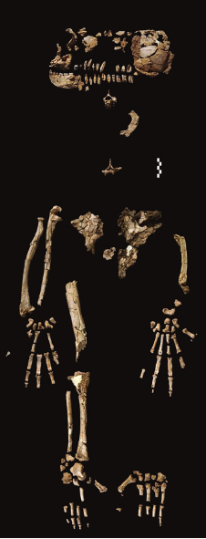

Hominiens fossiles : Ardi

ARA-VP-6/500, « Ardi », Ardipithecus ramidus
Discovered by a team led by Tim White in 1994 at Aramis in Ethiopia (White et al. 2009; Gibbons 2009). Its age is about 4.4 million years. Ardi is a spectacularly complete fossil. About 45% of her skeleton was found, including most of the skull, pelvis, hands and feet, and many limb bones. She was about 120 cm (3'11") tall and weighed about 50 kg (110 lbs).Les premiers fossiles de ramidus ont été découverts au début des années 1990 et publiés dans un article de Nature en 1994 (White, Suwa et Asfaw 1994), où ils ont été classés dans une nouvelle espèce, Australopithecus ramidus. Les ossements ne comprenaient que quelques fragments dentaires et certains os des bras. Environ 8 mois plus tard, une correction a été publiée dans Nature (White et al. 1995) réaffectant les ossements à un nouveau genre, Ardipithecus, et mentionnant qu'à la fin de 1994, ils avaient découvert une nouvelle mâchoire inférieure et un squelette partiel de ramidus. Il est clair que ces nouvelles découvertes ont renforcé leurs soupçons antérieurs selon lesquels ramidus ne pourrait pas appartenir au genre Australopithecus. Dans des articles ultérieurs, ils ont révélé que le squelette partiel était extrêmement fragile, que son excavation avançait extrêmement lentement, et qu'il pourrait s'écouler un certain temps avant qu'il ne soit entièrement extrait et analysé. Il s'est avéré que c'était une sous-estimation : il a fallu près de 15 ans pour extraire et analyser le squelette.
L'équipe de ramidus a cependant mis le temps à bon usage. Outre l'excavation et la restauration du squelette d'Ardi, ils ont découvert 110 fossiles de ramidus provenant d'au moins 35 individus. Ils ont également fouillé de manière exhaustive le site où le squelette a été trouvé, collectant absolument tout ce qu'il y avait, aboutissant in fine à plus de 150 000 spécimens, incluant du pollen, des plantes, du bois, des insectes, des escargots, des oiseaux et des animaux. Cette énorme récolte leur a permis de reconstituer avec précision les conditions environnementales il y a 4,4 millions d'années. Comme cela avait été suggéré à l'origine lorsque les premiers fossiles de ramidus ont été publiés il y a 15 ans, leur environnement était un milieu boisé avec de petites parcelles de forêt, ce qui semble mettre fin à l'idée populaire antérieure selon laquelle la bipédie humaine était en quelque sorte liée à l'environnement de savane habité par certains australopithèques.
Habituellement, de nouveaux fossiles significatifs sont accompagnés de la publication d'un article les décrivant, ou parfois de deux, l'un consacré au fossile et l'autre à son contexte géologique. Dans ce cas, l'équipe de ramidus, dans un véritable tour de force scientifique, a publié 11 articles simultanément dans la revue Science. Ces articles couvrent le fossile, divers aspects spécialisés de son anatomie, la géologie, l'environnement dans lequel il vivait, et ses implications pour l'évolution humaine.
Ar. ramidus est considérablement plus primitif que les australopithèques. La taille du crâne et du cerveau est très petite, comparable à celle d'un chimpanzé. Les fossiles dentaires montrent que ramidus était omnivore, contrairement aux chimpanzés qui sont adaptés à un régime principalement frugivore, et aux australopithèques qui étaient adaptés à une mastication intensive d'aliments abrasifs. ramidus possède également des canines fortement réduites chez les mâles, par rapport aux singes. Ceci est important car chez les singes, les canines sont des armes importantes contre les autres mâles du groupe social, de sorte que les canines réduites indiquent probablement un changement significatif dans la dynamique sociale de ramidus.
Les os des membres et du bassin montrent une adaptation au bipédalisme seulement imparfaite, comparée à celle des australopithèques. Le crâne est très similaire à celui de Sahelanthropus tchadensis, connu grâce à un crâne fossile datant de 6 à 7 millions d'années, surnommé Toumai, qui a été découvert au Tchad en 2001. Cela soulève la possibilité que S. tchadensis soit réaffecté au genre Ardipithecus.
Ar. ramidus était quadrupède dans les arbres, marchant le long des branches en utilisant les paumes de ses mains, comme le font de nombreuses singes. (i.e. ils ne se suspendaient pas aux branches ni ne grimpaient avec un torse vertical comme le font les singes modernes). Il est également affirmé par ses découvreurs que ramidus était bipède au sol, bien qu'il ne soit pas aussi bien adapté à cela que les humains. (Cette particulière affirmation est traitée avec prudence pour l'instant ; quelques scientifiques importants ont exprimé des réserves à ce sujet.) Le pied de ramidus avait un gros orteil largement divergent pour saisir lors de la grimpe (comme les chimpanzés), mais il manque la flexibilité extrême des pieds des chimpanzés qui leur permet de modeler leurs pieds autour des objets. ramidus possède également aucune des spécialisations anatomiques des chimpanzés pour la marche sur les phalanges lorsqu'il est au sol.
Le bassin de Ar. ramidus était très semblable à celui des singes dans la partie inférieure, mais présentait des modifications dans la partie supérieure qui en faisaient un marcheur debout efficace. Il est plus primitif que le bassin des australopithèques, qui étaient presque entièrement adaptés à la bipédie.
De quoi parle-t-on tant dans les titres concernant Ar. ramidus et la réfutation de l'idée d'un maillon manquant ? Bien qu'il soit vrai que personne ne prétende que les humains ont évolué à partir des chimpanzés, il subsiste une perception générale selon laquelle le dernier ancêtre commun des humains et des chimpanzés était, s'il n'était pas un chimpanzé, du moins un peu semblable à un chimpanzé (d'où l'idée d'un « maillon manquant » entre chimpanzés et humains). Selon les découvreurs, ce squelette de ramidus infirme cette idée. En considérant les humains modernes, H. erectus, H. habilis, les australopithèques et ramidus, leurs squelettes deviennent de moins en moins semblables à ceux des humains modernes, mais ils ne deviennent pas de plus en plus semblables à ceux des chimpanzés. Au. ramidus manque presque de toutes les spécialisations avancées des chimpanzés modernes, telles que la marche sur les phalanges et la brachiation. Les mains et les pieds de ramidus, et peut-être notre ancêtre commun avec les chimpanzés, semblent avoir été relativement peu spécialisés et, à certains égards, plus similaires à nos mains et nos pieds qu'à ceux des chimpanzés.
Ardipithecus et les créationnistes
Creationists have, of course, commented on this new fossil (e.g. Answers in Genesis, l'ICR, Institut de découverte, Ministères de la Création). But, exciting as this find is for scientists, it won't have much significance in the creation/evolution debate. For creationists, this is unquestionably an ape. It is, after all, more primitive than other australopithecine fossils that they already classify as apes, so the hominid features in pelvis, teeth, locomotion aren't going to concern them at all.Il y avait une citation de l'Institut de recherche sur la création que j'ai trouvée intéressante :
Il n'existe toujours aucune preuve solide pour étayer l'idée fantaisiste selon laquelle l'homme a évolué à partir des primates. Cela va de soi, puisque l'humanité a été spécialement créée dès le début.
Ceci résume l'attitude créationniste habituelle : les preuves sont sans importance. Aucun fossile ne peut être une preuve de l'évolution humaine, peu importe à quoi il ressemble, car ils savent déjà qu'ils savent que l'évolution n'a pas eu lieu.
Références
Gibbons, A. (2009) : Un ancêtre d'un nouveau genre : Ardipithecus dévoilé. Nature, 326:36-40.
À quel point « Ardi » était-elle humaine ? Katherine Harmon, Scientific American
White T.D., Asfaw B, Beyene Y., Haile-Selassie Y., Lovejoy C.O., Suwa G., WoldeGabriel G. (2009) : Australopithecus ramidus et la paléobiologie des premiers hominidés. Science, 326:75-86.
White T.D., Suwa G., et Asfaw B. (1994) : Australopithecus ramidus, une nouvelle espèce de hominidé ancien d'Aramis, Éthiopie. Nature, 371:306-12.
White T.D., Suwa G., et Asfaw B. (1995) : Australopithecus ramidus, une nouvelle espèce de hominidé ancien d'Aramis, Éthiopie. Nature, 371:306-12.
Liens
Page d'Ardipithecus de ScienceArdipithèque : Nous nous rencontrons enfin, par Carl Zimmer
Plus ancien squelette d'ancêtre humain découvert, par James Shreeve
Adieu, le maillon manquant : rencontrez « Ardi », par Answers in Genesis
Un nouveau lien évolutif ? Australopithecus sediba présente tous les mauvais signes, par Brian Thomas, Institute for Creation Research.
Les os de « Ardi », nouveau fossile de l'évolution humaine, « écrasés presque en miettes », par Casey Luskin, Discovery Institute
Ardipithecus à nouveau, par Creation Ministries
Cette page fait partie des FAQ sur les hominidés fossiles de l'Archive TalkOrigins.
Page d'accueil |
Espèces |
Fossiles |
Créationnisme |
Lecture |
Références
Illustrations |
Nouveautés |
Retours |
Recherche |
Liens |
Fiction
http://www.talkorigins.org/faqs/homs/ardi.html, 04/30/2010
Copyright © Jim Foley
|| Envoyez-moi un email